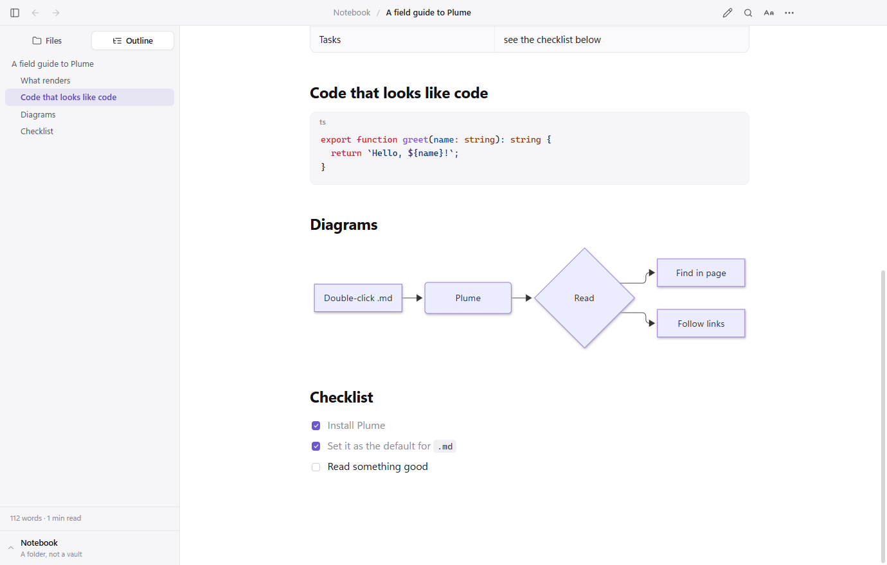

Opens with one double-click
Plume registers itself for .md, .markdown, .mkd and five more extensions. A second file opens in a new window of the running app — no cold start.
Double-click any .md file and it opens instantly — no vault,
no project, no editor chrome. Just the document, typeset the way it deserves.
Free and open source · Windows, macOS and Linux · Source on GitHub

Every Markdown app wants to own your notes. Plume just opens the file you clicked, renders it properly, and gets out of the way.
Plume registers itself for .md, .markdown, .mkd and five more extensions. A second file opens in a new window of the running app — no cold start.
Wiki links, embeds and section transclusion, callouts, ==highlights==, #tags, block ids and front-matter Properties — all rendered the way Obsidian does it.
Tables, task lists, footnotes, definition lists, emoji shortcodes, syntax highlighting, KaTeX math and Mermaid diagrams — rendered, not escaped.
The folder tree around your file — the whole vault when the note lives in one — and an outline of every heading, with an honest reading time.
Save the file in any editor and Plume updates in place — same scroll position, same spot on the page. Write in one window, read in the other.
Documents are sanitised, scripts never run, and links never launch programs. A note cannot make Plume pull files off other machines on your network.
Set the theme, the text size, the reading width and the typeface once. Plume remembers.




Share a note with someone who does not run Obsidian, or just read one note without waiting for a whole workspace to load. Plume speaks the same dialect.
[[note]], [[Note#Heading|alias]], and they resolve across the vault.![[image.png|300]] and ![[Note#Section]].> [!tip], including the foldable > [!warning]- kind.#tags, %%comments%% and ^block ids.
Ctrl+F, with next and previous and a match count — the way a browser does it.
Follow a link between notes and walk back out, with Alt+← or your mouse side buttons.
On white paper, with a real PDF outline built from your headings.
Jump into VS Code or Cursor if you have them, or the system text editor. Ctrl+E.
Click an image for a lightbox; every code block gets a copy button that copies what you can see.
Sidebar, text size, reload, new window, full screen — all on keys you already know.
| Action | Keys |
|---|---|
| Open file | Ctrl+O |
| Find / next / previous | Ctrl+F, Enter, Shift+Enter |
| Back / forward | Alt+← / Alt+→ |
| Toggle sidebar | Ctrl+\ |
| Text size | Ctrl+= / Ctrl+- / Ctrl+0 |
| Open in editor | Ctrl+E |
| Ctrl+P |
On macOS, use ⌘ in place of Ctrl and ⌥ in place of Alt.
Plume reads the files already on your disk — that part is free, forever, and needs no account. Create one anyway and you get a vault: sync a document from your laptop and open it on your desktop, or in any browser.
Thousands of notes. Sign up with an email and a password — no card, no trial clock, no telemetry.
Sign in once under ⋯ → Plume Vault. Push the open document, or let every save go up by itself.
Documents sit in private storage no one else can list. Passwords are hashed with scrypt. Nothing is indexed, shared or sold.
Free, open source, and about as heavy as a feather. Version 1.2.0.